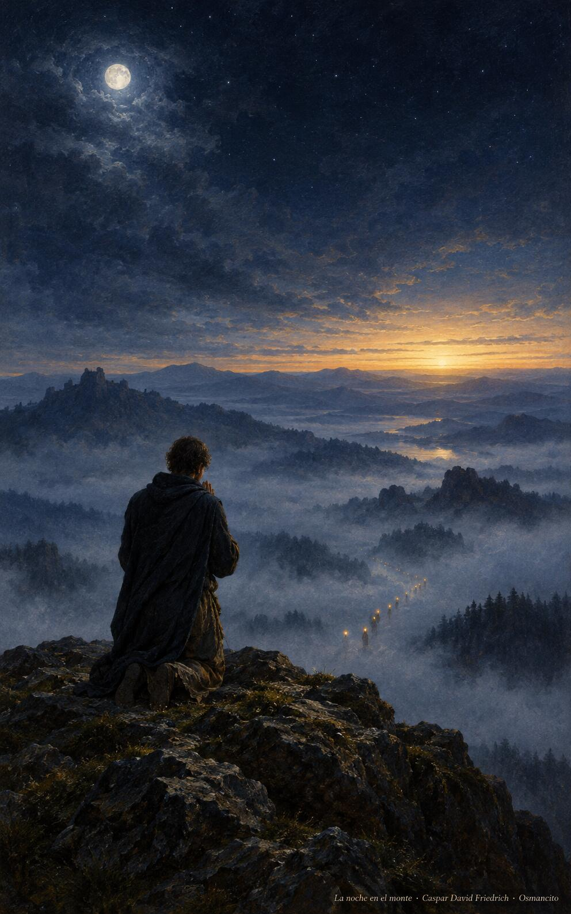
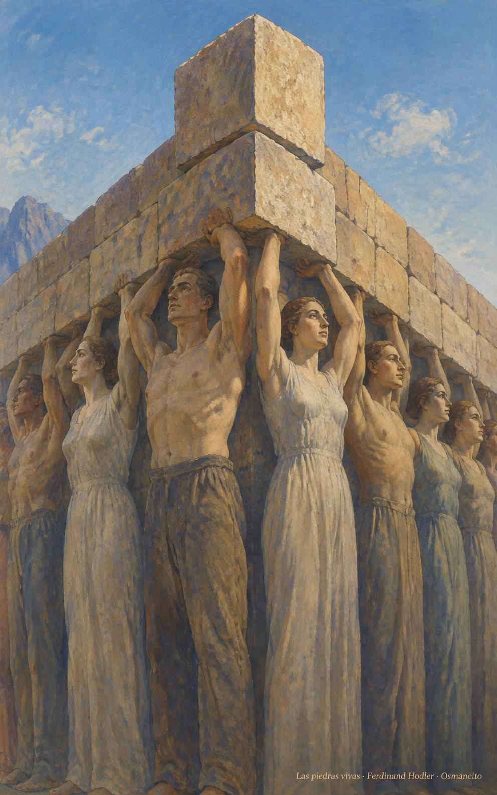
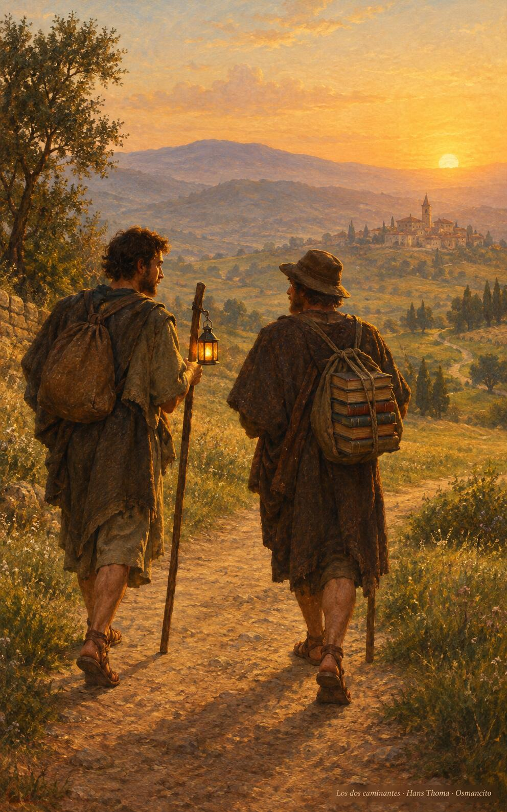

28 de octubre de 2026
¡Buenos días!
Morada de Dios
18
Ya no son ustedes extranjeros ni advenedizos; son conciudadanos de los santos y pertenecen a la familia de Dios.
Efesios 2,19. Fuente
Que seamos piedras vivas de un edificio que se levanta sin ruido, bien estructurado sobre el cimiento de quienes creyeron primero. Que nadie se sienta extranjero en la casa: todos conciudadanos, todos familia. Que aprendamos de la noche en el monte: orar antes de elegir, quedarnos despiertos con Dios hasta que amanezca la decisión. Que el mensaje resuene sin palabras, de un día al otro, hasta el fin del mundo, y seamos morada para Dios.

- La oración de la noche entera en el monte recoge Lucas 6: antes de elegir a los doce, quedarse despierto con Dios hasta el alba.

- Hombres y mujeres son el cimiento que sostiene la casa y la piedra angular une los muros: Efesios 2, nadie es extranjero en la construcción.
¡Feliz miércoles 28 de octubre!
😊🙋♂
Santos Simón y Judas, apóstoles
Que los nombres olvidados nos consuelen: Simón, el apasionado; Judas, el que preguntó con confianza. De ellos se sabe poco, y sin embargo sostienen el edificio: piedras del cimiento que nadie ve y todos pisan. Que aprendamos la grandeza de lo anónimo, la fidelidad que no pide retrato. Que llevemos juntos la buena noticia hasta el último rincón, y que en las causas imposibles nos acompañe su amistad, como una lámpara que no se apaga.

- Los dos apóstoles caminan juntos, uno con la lámpara encendida y otro con el fardo de libros: la buena noticia llevada hasta el último rincón.
¡Feliz día de los Santos Simón y Judas!
© 2026 Osmancito